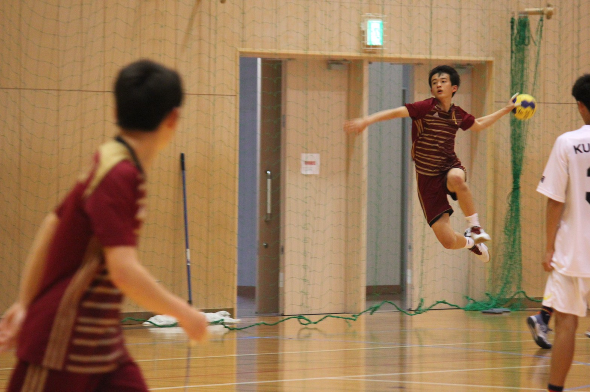
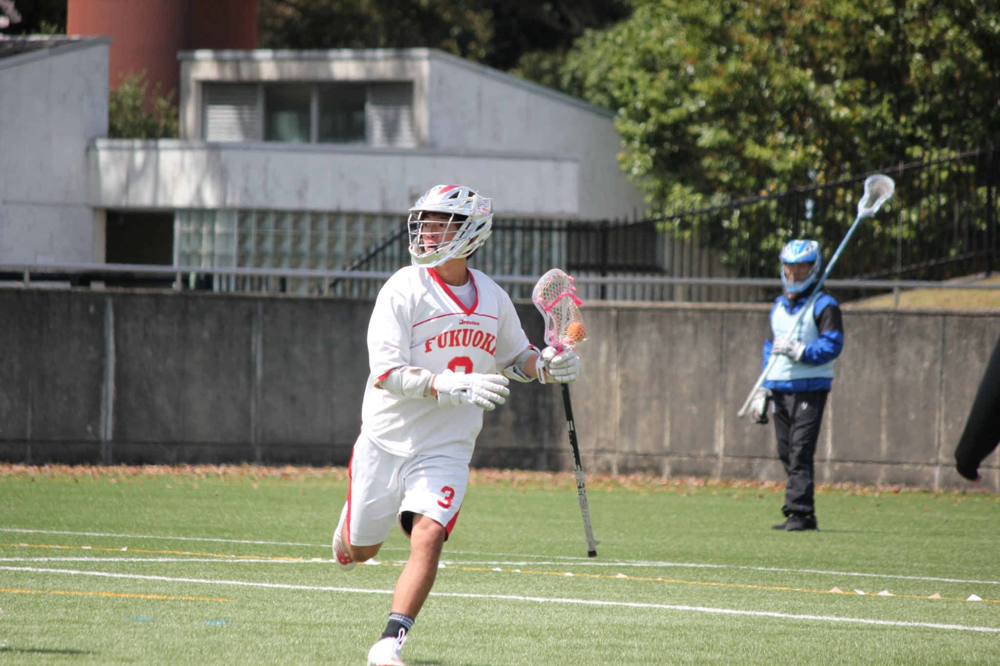

名前 (Name)：前田玲音（Reo Maeda）
生まれ・学歴
- 2003年8月14日：熊本県で生まれてしまった
- 2016年3月：福岡市立当仁小学校 卒業
- 2019年3月：福岡市立当仁中学校 卒業
- 2022年3月：福岡大学附属若葉高等学校 卒業
- 2026年3月：福岡大学 理学部 応用数学科 卒業
- 2026年4月：福岡大学大学院 理学研究科 応用数学専攻 入学
部活動歴
ハンドボール（中学・高校）
- 活動期間：2016〜2021
- ポジション：右サイド

ラクロス（大学）
- 活動期間：2022〜2025
- ポジション：アタック

バイト歴
- 吉野家のバイトリーダー
- Uber Eatsの配達員
資格
- 2022年8月：普通自動車第一種運転免許状(AT限定) 取得
- 2026年3月：中学校教諭一種免許状(数学) 取得
- 2026年3月：高等学校教諭一種免許状(数学・情報) 取得
趣味
- 筋トレ, 飲み会, 競艇, 旅行∧(and)ドライブ, (数学(って言っておいたほうがいいよね...笑))
筋トレは週3以上を目標に頑張っています. 個人的には胸トレと腕トレが好きです. 足トレはきつくて嫌ですが, 何とか頑張ってます.
競艇はみんなで賭けると楽しいです. ぜひ一緒に行きましょう.
∧という記号は論理積といい, 日本語で「かつ」, 英語で「and」を意味します.
研究情報
- 過去(学部生時代)の研究テーマ：確率論
- 現在(院生時代)の研究テーマ：最適輸送理論
-
テーマの紹介：最適輸送理論とは,「物をどこからどこへ運べば最も効率的か」を数学的に研究する理論です.
もっと言うと, ある分布を別の分布へ移すとき, その輸送コストが最小となるように移す方法を研究する数学の分野です.確率論と幾何学, 解析学の分野が関わってきます.
研究で扱っている資料
Filippo Santambrogio氏による最適輸送理論の公開PDF：
Optimal Transport for Applied Mathematicians (Santambrogio, 2015)
リンク